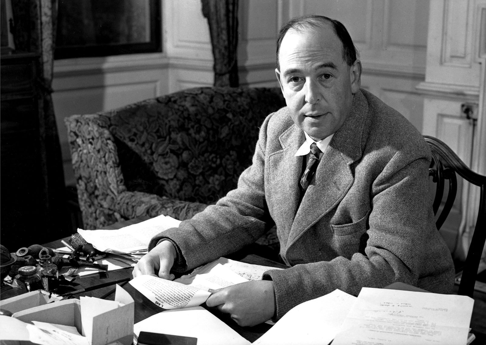

C.S. LEWIS
Clive Staples Lewis

C.S. Lewis 1898 - 1963
- 1898 - Nasce em Belfast, Irlanda.
- 1908 - Morre Flora Lewis, sua mãe. Ingressa no WynyardSchool.
- 1917 - Alista-se no exército para lutar na Primeira Guerra Mundial e se encontra com o amigo de guerra, Paddy Moore e sua mãe, Mrs. Janie Moore
- 1925 - Admissão no MagdaleneCollege. Primeiro encontro com J. R. R. Tolkien.
- 1929 - Morre seu pai, acometido de câncer. Início do processo de conversão de Lewis.
- 1933 - Publicação de Pilgrim‘sRegress [O regresso do peregrino].
- 1936 - Publicação de The Allegoryof Love [A alegoria do amor].
- 1942 - Várias publicações, entre elas, Cartas de um diabo a seu aprendiz.
- 1952 - Publicação de Cristianismo puro e simples e A viagem do peregrino da alvorada. Joy Gresham passa o Natal com os irmãos Lewis.
- 1963 - Morre aos 22 de novembro, no mesmo dia que Aldous Huxley e o presidente Kennedy falecem.
"E aí aconteceu uma coisa muito engraçada. As crianças não tinham ouvido falar de Aslam, mas no momento em que o castor pronunciou o nome esse nome, todos se sentiram diferentes. Talvez isso já tenha acontecido a você em sonho, quando alguém lhe diz qualquer coisa que você não entende mas que, no sonho, parece ter um profundo significado – o qual pode transformar o sonho em pesadelo ou em algo maravilhoso, tão maravilhoso que você gostaria de sonhar sempre o mesmo sonho."
- C.S. LEWIS em As Crônicas de Nárnia
Para saber mais visite sua página no wikipedia